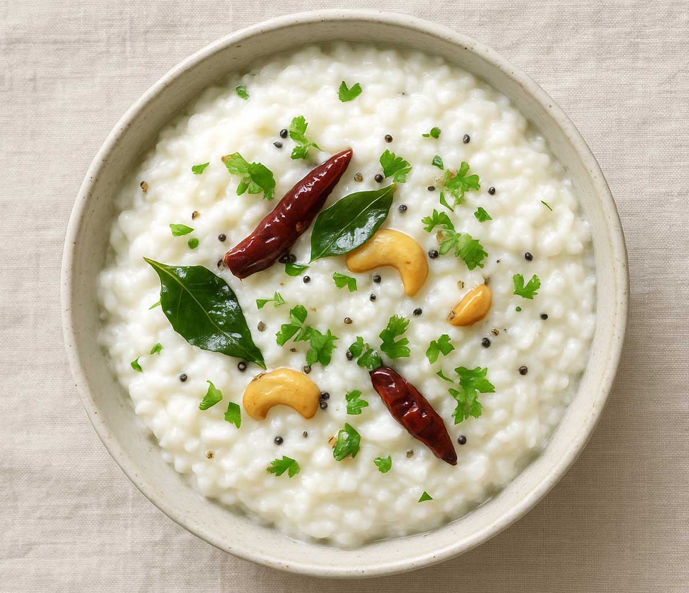

Curd Rice
⭐⭐⭐⭐⭐ 4.8 Rating | ⏱ 10 Minutes | 🍽 4 Servings
Category
Lunch / Dinner
Difficulty
Easy
Calories
380 kcal
Cooking Style
Tempered
📋 Ingredients
- 1 cup short-grain rice (e.g., Sona Masuri or Ponni)
- Water 3 cups (for soft cooking)
- 1 cup fresh yogurt (curd) + ½ cup plain milk
- 1 tbsp oil or ghee
- 1 tsp mustard seeds
- 1 tsp urad dal (split black gram)
- 1 green chili (finely chopped)
- 1 tsp fresh ginger (minced)
- 1 sprig curry leaves
- Pinch of asafoetida (hing)
- 2 tbsp chopped coriander leaves
- 2 tbsp pomegranate arils or grated carrots
- Salt to Taste
🍳 Required Utensils
- Pressure cooker or heavy pot
- Potato masher or heavy ladle
- Small tempering pan (tadka pan)
- Mixing bowl
📖 Introduction
Curd Rice (also known as Thayir Sadam or Daddojanam) is a comforting South Indian staple made by combining soft, overcooked rice with fresh yogurt, tempered spices, and optional fresh fruits.
🔬 Principle
Curd rice relies on starch breakdown and lactic acid balance. Warm, overcooked rice absorbs liquid readily, while adding a small splash of milk prevents the yogurt from turning overly sour over time.
👨🍳 Procedure
- Wash rice and cook until soft.
- Wash the dal thoroughly.
- Pressure cook dal with turmeric and water for 4 whistles.
- Heat oil or ghee in a pan.
- Add mustard seeds and cumin seeds.
- Add curry leaves and green chillies.
- Add chopped onions and sauté until golden.
- Add ginger-garlic paste and cook for 2 minutes.
- Add chopped tomatoes and cook until soft.
- Add chilli powder and salt.
- Mix the cooked dal into the masala.
- Cook for 5 minutes.
- Garnish with coriander leaves.
- Serve hot with steamed rice.
⚠ Precautions
- Do not heat curd rice after adding the yogurt, as thermal heat causes the curd to split and curdle.
- Those with severe lactose intolerance should opt for plant-based yogurt alternatives (like coconut or peanut yogurt).
💡 Chef Tips
- Always mash the rice when it's hot; once cooled, the starches firm up, making it harder to reach a velvety texture.
- Adding milk acts as a buffer against acidity—essential if you're taking the rice in a lunchbox or serving it hours later.
🥗 Nutrition Facts
| Nutrient | Amount |
|---|---|
| Calories | 220-250 kcal |
| Protein | 6 g |
| Carbohydrates | 38 g |
| Fat | 6 g |
| Calcium | 180 mg |
🍽 Serving Suggestions
- Serve chilled or at room temperature with lemon pickle, mango pickle, or fried mor milagai (sun-dried salted chilies).
- Pair alongside potato fry, vadams, or appalam.
🌿 Health Benefits
- Supports gut health and aids smooth digestion.
- Naturally regulates internal body temperature, making it ideal for warm weather or soothing an upset stomach.
✅ Result
In South Indian culinary traditions, Poori, Puliyogare, and Curd Rice represent a harmoniously balanced meal spectrum that spans rich textures, bold spices, and soothing comfort. Crisp, golden-puffed pooris provide a warm, airy baseline that pairs beautifully with savory potato curries or sweet treats. Puliyogare delivers an intense explosion of flavor through its signature Puli Kachal—a concentrated, oil-emulsified tamarind paste tempered with mustard seeds, roasted lentils, and crunchy peanuts that coat every distinct grain of rice. To round out the meal, creamy Curd Rice acts as the ultimate cooling counterpoint; overcooked, mashed rice folded with fresh yogurt, milk, and fragrant spices gently soothes the palate, aids digestion, and brings perfect equilibrium to the dining experience.
🎥 Watch Recipe Video
Learn the complete recipe by watching the step-by-step video.
▶ Watch on YouTube